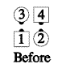
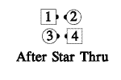
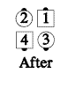

From any appropriate formation (e.g. Normal Facing Couples): Those who can All Star Thru. Those who can do the mirror image of a Star Thru (an arch is made with the man's left hand and the woman's right hand; the man goes around the arch while the lady goes under). In each part of the call, some dancers must be active. Normal facing couples will end as sashayed couples back-to-back.

For Teaching: The lady always goes under the arch.
Timing: 6
© Copyright 1982, 1986-1988, 1995, 2001-2015. Bill Davis, John Sybalsky, and CALLERLAB Inc., The International Association of Square Dance Callers. Permission to reprint, republish, and create derivative works without royalty is hereby granted, provided this notice appears. Publication on the Internet of derivative works without royalty is hereby granted provided this notice appears. Permission to quote parts or all of this document without royalty is hereby granted, provided this notice is included. Information contained herein shall not be changed nor revised in any derivation or publication.